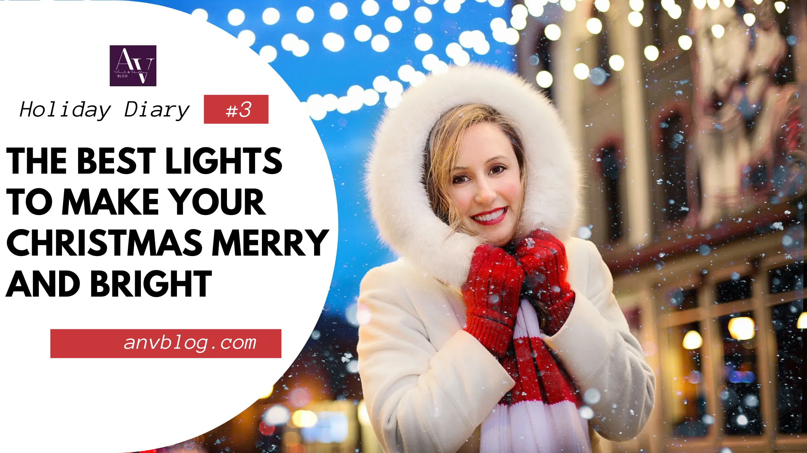

Illuminate the Spirit of Christmas: Discover the Best Lights to Make Your Holiday Merry and Bright
Get ready to light up your holiday season with the best Christmas lights that will bring a touch of magic to your home. The holiday season is all about creating a warm, festive atmosphere, and what better way to do that than with the perfect illumination? Whether you prefer the traditional twinkle of warm white lights or the vibrant colors of LED strings, we've got you covered. In this article, we will guide you through the best Christmas lights available, ensuring that your holiday decorations are merry and bright.
From classic incandescent light strings to energy-efficient LED options, we will explore the different types of Christmas lights that suit your style and budget. Dive into the world of sparkling icicle lights, dazzling fairy lights, and mesmerizing projector lights to elevate your holiday decor to the next level. Whether you're aiming for a cozy, nostalgic ambiance or a modern, brilliant display, we have curated a selection of lights that will make your home shine with festive cheer.
Don't miss out on the opportunity to transform your space into a winter wonderland. Let's explore the best Christmas lights and illuminate the spirit of the season together.

The importance of Christmas lights
Christmas lights are a symbol of the holiday season, representing joy, warmth, and the spirit of celebration. They have the power to transform any space into a magical winter wonderland, creating a sense of awe and wonder for both children and adults alike. The tradition of hanging lights during Christmas dates back to the 17th century when candles were used to light up Christmas trees. Today, we have a wide variety of options to choose from, ranging from classic incandescent lights to energy-efficient LED lights. These lights not only add beauty to our homes but also serve as a beacon of hope and happiness during the dark winter nights.
The right choice of Christmas lights can set the mood for the entire holiday season. Whether you want to create a cozy, intimate ambiance or a dazzling, grand display, the type of lights you choose will play a crucial role. From string lights that can be wrapped around trees and bushes to projector lights that cast festive images on your walls, the possibilities are endless. So, let's dive into the world of Christmas lights and discover the best options to make your holiday season truly magical.
Different types of Christmas lights
When it comes to Christmas lights, there are several types to choose from, each with its own unique charm and appeal. The most traditional option is incandescent lights, which emit a warm, soft glow that creates a nostalgic and cozy atmosphere. These lights are available in various colors and shapes, allowing you to customize your decorations to suit your style. However, incandescent lights are not as energy-efficient as other options and may require more maintenance.
If you're looking for a more modern and eco-friendly option, LED lights are the way to go. LED lights use less energy, last longer, and are available in a wide range of colors and effects. You can choose from strings of multicolored lights or opt for single-color strands to create a more uniform look. LED lights are also safer to use as they don't generate as much heat as incandescent lights, reducing the risk of fire.
Another popular choice is fairy lights, which are delicate, small bulbs that can be used to create a magical, ethereal effect. These lights are often used to decorate Christmas trees, wreaths, and garlands, adding a touch of enchantment to any space. Fairy lights come in various lengths and colors, allowing you to unleash your creativity and create stunning displays.
For those who want to take their Christmas lighting to the next level, there are icicle lights. These lights mimic the look of real icicles hanging from your roof or eaves, creating a dazzling and mesmerizing effect. Icicle lights are perfect for outdoor decorations and can be used to line the edges of your roof or drape along fences and trees. They come in different lengths and colors, making it easy to find the perfect set for your home.
Outdoor Christmas lighting ideas
When it comes to outdoor Christmas lighting, the possibilities are endless with products like JMEXSUSS 66ft 200 LED Christmas Lights Outdoor. You can turn your front yard into a magical winter wonderland or create a cozy, festive atmosphere on your porch or patio. Here are some ideas to inspire you:
Wrap trees and bushes: Use string lights to wrap around the trunks of your trees and the branches of your bushes. This will create a stunning, sparkling effect and make your garden come alive with holiday cheer.
Illuminate pathways with Eyrosa Solar Outdoor Lights: Line your pathways with stake lights or solar-powered lanterns to create a warm and inviting entrance for your guests. This not only adds a decorative touch but also ensures safety during the dark winter nights.
Highlight architectural features: Use spotlights or projector lights to highlight the architectural features of your home, such as columns, arches, or windows. This will add depth and dimension to your outdoor decorations.
Hang lights on fences or railings: String lights can be hung along fences or railings to create a whimsical and festive look. You can also use fairy lights to create a cascading effect along your fence or wrap them around your porch railing.
Create a focal point: Choose a centerpiece for your outdoor decorations, such as a giant inflatable Santa Claus or a beautifully decorated Christmas tree. Surround it with lights to make it the focal point of your display.
Remember to consider the safety aspect when installing outdoor lights. Use outdoor-rated extension cords and ensure that all connections are secure and protected from the elements. Take care not to overload electrical circuits and always follow the manufacturer's instructions for installation.
Indoor Christmas lighting ideas
Indoor Christmas lighting is all about creating a cozy, warm ambiance that brings the holiday spirit into your home. Here are some ideas to help you transform your indoor space:
Decorate your Christmas tree: Start by wrapping string lights around your Christmas tree, starting from the base and working your way up. Opt for warm white lights for a classic look or add a pop of color with multicolored strands. Make sure to distribute the lights evenly for a balanced and harmonious effect.
Create a magical centerpiece: Use fairy lights to create a magical centerpiece on your dining table or mantelpiece. Fill glass jars or vases with fairy lights and decorative ornaments to add a festive touch to any room.
Hang lights on windows: Frame your windows with string lights to create a cozy and inviting atmosphere. This will make your home look festive from both the inside and outside.
Add lights to garlands and wreaths: Enhance the beauty of your garlands and wreaths by weaving string lights through them. This will make them sparkle and shine, adding a touch of elegance to your decorations.
Create a DIY light display: Get creative and make your own light display using mason jars, wine bottles, or lanterns. Fill them with fairy lights and place them on shelves, mantels, or tables to create a warm and magical glow.
Remember to use timers or smart plugs to automate your indoor lighting. This will not only save energy but also ensure that your lights turn on and off at the desired times, creating a hassle-free experience.
Energy-efficient Christmas lights
In today's world, energy efficiency is an important consideration when choosing Christmas lights. Not only does it help reduce your carbon footprint, but it also saves you money on your electricity bill. LED lights are the most energy-efficient option available, consuming up to 80% less energy than traditional incandescent lights. They also last much longer, reducing the need for frequent replacements. LED lights come in a variety of shapes, colors, and effects, allowing you to create stunning displays while being environmentally conscious.
Another energy-efficient option is solar-powered lights. These lights harness the power of the sun during the day and automatically light up at night. They are perfect for outdoor decorations as they eliminate the need for electrical outlets or extension cords. Solar-powered lights are available in various styles, including string lights, stake lights, and lanterns, giving you plenty of options to choose from.
Safety tips for Christmas lights
While Christmas lights bring joy and beauty to our homes, it's important to prioritize safety when using them. Here are some safety tips to keep in mind:
Check for damaged lights: Before installing your lights, carefully inspect them for any signs of damage, such as frayed wires or broken bulbs. Discard any lights that are damaged beyond repair.
Use outdoor-rated lights for outdoor decorations: If you plan to use lights outdoors, make sure they are specifically designed for outdoor use. Outdoor-rated lights are made to withstand the elements and are less likely to cause electrical hazards.
Avoid overloading electrical circuits: Be mindful of the electrical load when connecting multiple strings of lights. Overloading circuits can lead to overheating and pose a fire hazard. Refer to the manufacturer's guidelines for the maximum number of lights that can be connected.
Turn off lights when not in use: To conserve energy and reduce the risk of fire, always turn off your Christmas lights when you're not at home or when you go to bed. Consider using timers or smart plugs to automate the process.
Keep lights away from flammable materials: Ensure that your lights are not in direct contact with flammable materials such as curtains, fabric, or dry Christmas trees. Keep them at a safe distance to prevent the risk of fire.
By following these safety tips, you can enjoy your Christmas lights with peace of mind, knowing that you have taken the necessary precautions to keep your home and loved ones safe.
Best Christmas lights for different budgets
When it comes to Christmas lights, there are options available for every budget. Here are some recommendations for different budget ranges:
Budget-friendly: If you're on a tight budget, consider opting for basic incandescent string lights like PHILIPS 2 Pack Smooth Mini Christmas Lights. They are affordable and widely available, allowing you to create a festive atmosphere without breaking the bank. Look for lights with a good warranty to ensure durability.

Mid-range: LED lights like BEEWIN 200 Christmas Icicle Lights are a great option for those looking for energy-efficient and long-lasting lights without spending a fortune. They may cost a bit more upfront but will save you money in the long run due to their energy-saving capabilities.
High-end: For those who want to create a show-stopping display, investing in programmable LED lights with various effects and color options like Twinkly Strings is the way to go. These lights allow you to customize your lighting display and create a truly unique and mesmerizing spectacle.
Remember, the best Christmas lights are the ones that bring you joy and create the ambiance you desire. Consider your budget and personal preferences when making your decision.
Where to buy Christmas lights
Christmas lights are widely available both online and in physical stores. Here are some popular options for purchasing Christmas lights:
Home improvement stores: Stores like Home Depot, Lowe's, and Walmart offer a wide selection of Christmas lights at various price points. You can find both indoor and outdoor lights, as well as accessories and extension cords.
Online retailers: Websites like Amazon, eBay, and Wayfair have a vast range of Christmas lights to choose from. Online shopping allows you to compare prices, read customer reviews, and have the lights delivered right to your doorstep.
Specialty stores: Some stores specialize in Christmas decorations and offer a curated selection of high-quality lights. These stores often have unique and hard-to-find options that can add a special touch to your holiday decor.
Local Christmas markets: During the holiday season, many cities and towns have Christmas markets where local artisans and vendors sell their handmade decorations and lights. Visiting these markets can be a great way to support small businesses and find one-of-a-kind lights.
When purchasing Christmas lights, make sure to check the product descriptions and customer reviews to ensure the quality and reliability of the lights. It's also a good idea to compare prices and look for any ongoing sales or discounts.
DIY Christmas lighting projects
If you're feeling creative and want to add a personal touch to your Christmas lighting, there are plenty of DIY projects you can try. Here are some ideas to inspire you:
Mason jar lanterns: Create beautiful lanterns using mason jars, fairy lights, and decorative elements such as pinecones or ribbons. Simply place the fairy lights inside the jars, add your chosen decorations, and secure the lid. These lanterns can be hung or placed on tabletops for a cozy glow.
Wine bottle lights: Empty wine bottles can be transformed into stunning light fixtures. Clean the bottles thoroughly, insert a string of fairy lights into each bottle, and let the lights shine through the glass. You can add a festive touch by painting the bottles or wrapping them with ribbons.
Branch chandelier: Gather some fallen branches, spray paint them in gold or silver, and hang them from the ceiling using fishing line or twine. Wrap fairy lights around the branches to create a mesmerizing chandelier that will add a touch of elegance to any room.
Snowflake lights: Cut out snowflake shapes from white cardstock or plastic sheets. Attach fairy lights to the back of the snowflakes using transparent tape or glue. Hang the snowflakes in windows or drape them along walls to create a magical winter scene.
Lighted garlands: Upgrade store-bought garlands by adding string lights. Simply weave the lights through the garland, making sure to distribute them evenly. This will make your garland sparkle and shine, creating a festive focal point for your decorations.
DIY projects not only allow you to personalize your Christmas lighting but also provide an opportunity for creativity and self-expression. Get inspired, gather your materials, and let your imagination run wild.

Conclusion
Christmas lights are an essential part of the holiday season, bringing warmth, joy, and a touch of magic to our homes. From classic incandescent lights to energy-efficient LEDs, there are options available to suit every style and budget. Whether you prefer a traditional, cozy ambiance or a modern, dazzling display, the right choice of Christmas lights can transform your space into a winter wonderland.
When it comes to outdoor lighting, consider wrapping trees and bushes, illuminating pathways, and highlighting architectural features. Indoors, decorate your Christmas tree, create magical centerpieces, and add lights to garlands and wreaths. Remember to prioritize safety by checking for damaged lights, avoiding overloading electrical circuits, and keeping lights away from flammable materials.
LED lights are the most energy-efficient option, while solar-powered lights are perfect for outdoor decorations. Consider your budget and personal preferences when choosing the best Christmas lights for your home. You can find a wide selection of lights at home improvement stores, online retailers, specialty stores, and local Christmas markets.
If you're feeling creative, try some DIY Christmas lighting projects using mason jars, wine bottles, branches, or snowflakes. These projects will add a personal touch to your decorations and allow you to showcase your creativity.
Illuminate the spirit of Christmas this holiday season with the best lights that will make your home merry and bright. Let the magic of Christmas lights create memories that will last a lifetime.
This post contains links that will redirect you to the products page. I get commissions for purchases made through links in this post. As an Amazon Associate, I earn from qualifying purchases.